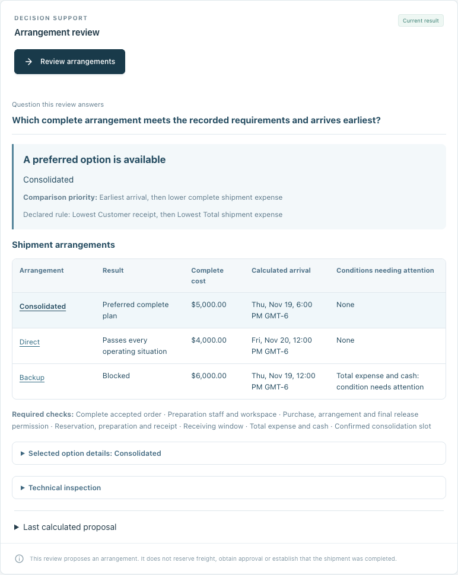

Maya’s morning exception report has narrowed the work. Order ORD-105 is now revision 2, but its consolidation confirmation still covers revision 1. Direct is the current supported proposal: $4,000, arriving Friday at noon. The launch team still wants Thursday’s arrival. Finance will accept no more than $5,000. Operations needs a confirmation that actually covers the changed order.
A new confirmation reaches Maya. Can she now put Consolidated forward, and show the team exactly why the proposal changed?
In the previous article, the CLI brought company exports into a repeated shipment review. This continuation follows one flagged shipment into a Shipment Reservation Desk: a focused React application using the Decision Lab SDK. The people, records and outcomes remain fictional.
The developer needs to give Maya a working screen without introducing a second interpretation of the shipment rules. The batch report and the desk should reach the same finding from the same app and case.
What would the team otherwise build?
A workbook, shared module or general solver could support this decision. The practical choice is which assessment, input and reporting responsibilities the developer wants to implement alongside Maya’s interface.
| Approach | What it offers | What the team maintains |
|---|---|---|
| Keep the CLI review and a manual handoff | The existing batch assessment and supporting reports. | A process for collecting Maya’s updates and returning the reassessed findings. |
| Use a workbook or shared decision module | Checks and calculations tailored to the team, with a module reusable across interfaces. | The modeled requirements, input checks, comparison logic and supporting review record. |
| Build around a general solver | A foundation for custom constraint or optimization models. | The shipment model, data mappings, ranking, explanations and application’s input/report contract. |
| Embed the existing Decision Lab review | The published shipment app, SDK case validation and assessment, complete reports and shared decision view. | Trustworthy cases, team-specific forms, record mapping and integration with the operating process. |
The developer chooses the SDK because the shipment model already exists and the CLI already uses it. Maya gets a custom desk while both clients reuse the same published requirements and preference rules.
Open the published shipment review inside the desk.
The SDK instance uses a browser executor, so assessment and report preparation execute in a browser worker:
const executor = createBrowserExecutor();
const lab = createDecisionLab({ executor });createDecisionLab comes from @decision-lab/sdk; createBrowserExecutor comes from @decision-lab/sdk/browser. The example uses React, but these SDK calls are ordinary JavaScript.
The application opens the app package and reads its case binding:
const opened = lab.apps.open(await readJSON(
new URL(settings.appUrl, configURL), controller.signal,
));
const binding = lab.cases.create({ app: opened }).binding;The surrounding code checks that binding against the configured identity. This is the same consolidation app, release 1, as the CLI example. It supplies the shipment requirements and earliest-arrival priority. An arrangement brings the route, preparation, timing, resources and permissions into a complete combination that can be assessed together.
Maya selects ORD-105, checks its loaded records and selects Review arrangements. Direct is preferred at $4,000; Consolidated is blocked by the old confirmation. Loading or importing a case prepares the screen; calculation remains explicit.

Supply the changed record through the same case contract.
A complete case supplies the readiness records, calendars, resources and scoped permissions behind the displayed fields. A quote alone cannot establish those conditions. The desk edits the advertised quote and confirmation fields while retaining that underlying case.
ORD-105’s registration and permissions already cover revision 2. Consolidated’s remaining failed condition is its slot confirmation: the record of the loading opportunity, order, ship point and interval it covers. The form preserves the old record’s original revision 1.
Maya records the separately supplied fictional confirmation NEW-SLOT-105-R2 for revision 2. Its destination, ship point, ship date and validity interval also cover this shipment. Those other fields remain unchanged. Relabelling an old record without obtaining a replacement would not create that evidence.

The application maps her edits into canonical inputs. The SDK binds that case to the app and validates it against the declared input contract:
const snapshot = lab.cases.create({ app, inputs });
const validation = lab.cases.validate({ app, case: snapshot });Validation issues stop this assessment. Business eligibility comes next: whether a confirmation or permission covers the current order belongs to the app’s requirements. Valid input structure does not establish that every arrangement passes, or authenticate the underlying record.
Assess the complete arrangements with one SDK call.
Maya’s edit withdraws the current recommendation and marks the desk Needs reassessment. Selecting Review arrangements supplies the changed bound case to the SDK and requests all reports:
const result = await lab.run({
app,
case: snapshot,
execution: { signal: controller.signal, timeoutMs: 15000 },
...(run ? { context: { priorRun: run } } : {}),
reportOptions: { scope: 'all', locale: 'en-US' },
});lab.run applies the published model and returns the assessment, execution status and prepared report. The developer can reuse its feasibility and ranking findings rather than implementing another set of shipment checks in the form.
Before showing Maya a current proposal, the desk requires a recognized completed execution and explicit report-completeness metadata:
if (run.execution?.status !== EXECUTION_STATUS.COMPLETED
|| !inspectReportCompleteness(run.report).complete) {
return unavailable('The calculation or its report is incomplete. Reassess before choosing an arrangement.');
}EXECUTION_STATUS is the SDK’s execution vocabulary. inspectReportCompleteness checks the supported report format and its retained-completeness flags; missing or malformed flags cannot establish completeness. This metadata check does not validate identity or report contents, establish a preference, or record human acceptance.
The desk then resolves the retained native assessment and asks three separate questions through the SDK:
- Is the assessment complete?
isAssessmentCompletechecks its declared finished evaluation, valid and completed admission, and complete search coverage. - Is there a checked option that passes?
hasFeasibleWitnesschecks that retained feasible-plan identities are backed by complete, feasible plans. - Is a preference established?
hasEstablishedPreferencechecks whether the complete assessment establishes its preferred alternatives, including genuine ties.
const assessment = commitment.resolveCommitmentAssessment(run.assessment, run.report);
if (!commitment.isAssessmentComplete(assessment)) {
return unavailable('The calculation has not checked every admitted arrangement and situation.');
}
const hasWitness = commitment.hasFeasibleWitness(assessment);
const recommendation = assessment.recommendation;
// An unverified positive claim is unavailable, not evidence that every plan is blocked.
if (assessment.feasiblePlanIds.length && !commitment.hasEstablishedPreference(assessment)) {
return unavailable('The calculation has not established a preferred arrangement.');
}A limited search can find a checked feasible option while remaining incomplete and without an established preference. Conversely, a complete assessment can find no passing option: completion is true, while witness and preference are false. Maya needs those situations distinguished before she puts a proposal forward.
This desk requires completion, then an established preference whenever the assessment lists feasible plans. A complete blocked finding remains usable; an incomplete search does not supply the desk’s current proposal. For detailed completion diagnostics, the SDK also offers inspectAssessmentCompleteness with complete and structured issues; the shown code uses the boolean helper.
The helpers inspect retained native claims. They do not evaluate the model, validate an entire run, establish that its inputs are current, authenticate records or accept a human review. App identity, report completeness and this screen’s timing and arrangement-shape checks remain separate. The listed options still define the model’s scope.
With the current confirmation recorded and all other requirements still satisfied, Consolidated becomes preferred at $5,000, arriving Thursday, November 19 at 6 p.m. Direct still passes at $4,000, arriving Friday, November 20 at noon. Backup arrives Thursday at noon but costs $6,000, exceeding the expense limit.
The priority matters: the app prefers the earliest arrival among arrangements that pass. Consolidated’s extra $1,000 buys an earlier arrival than Direct while staying within the recorded limit.


The worked cases use a fixed review basis of Tuesday, November 17, 2026 at 8 a.m., UTC−06:00, with a noon reservation cutoff. This continuation changes the supplied confirmation while retaining that clock. The receipt records when the calculation was made; a fresh complete case is needed to advance the operating “as of” time.
Keep blocked shipments and input problems distinct.
The desk’s local REVIEW_OUTCOME distinguishes an available but blocked business finding from an unavailable calculation. Its REVIEW_STATE tracks the screen’s progress, while SLOT_CONFIRMATION_STATUS describes the entered slot record. Those application-specific values do not replace the SDK’s execution or assessment statuses, and a confirmed record alone does not establish eligibility.
The recorded situation determines the next step:
| Recorded situation | Finding | Business response |
|---|---|---|
| Current permissions and confirmation | Consolidated preferred: $5,000, Thursday at 6 p.m. | Review the earlier-arrival proposal for operational handoff. |
| ORD-105: current permissions, old-revision confirmation | Consolidated blocked; Direct preferred: $4,000, Friday at noon. | Review Direct or obtain a current consolidation confirmation. |
| ORD-106: permissions cover the old revision | No listed arrangement passes. | Obtain the appropriate current authorizations. Updating the confirmation alone is insufficient. |
| A quote is entered in EUR | Input correction required; no current recommendation. | Supply a supported USD quote. This adapter provides no currency conversion. |
The EUR diagnostic comes from the form adapter before SDK evaluation; it is not a shipment feasibility result. A cancelled or incomplete calculation supplies no current proposal. The desk retains the previous complete result in a labelled comparison, rather than treating it as a fallback recommendation.
Reuse the decision screen and keep its complete basis available.
The developer passes the retained report to DecisionView from @decision-lab/react-views:
{complete && <DecisionView report={desk.run.report} profile={config.decisionPresentation} />}The SDK prepares the decision projection; the shared component presents the question, finding, comparison priority, alternatives, costs and blockers. Its presentation profile supplies business labels and dollar and calendar formatting for retained values. It does not recalculate the schedule or decide which arrangement wins.
Maya opens Selected option details for requirements and timing. Technical inspection → Inspect complete report opens the full native analysis; Return to decision restores the comparison without another assessment.

The developer reuses the report interface as well as the assessment. Distinct arrangements and genuine preferred ties remain distinct. A new business requirement belongs in a reviewed app release; display labels and columns belong in the presentation profile.
Carry the complete review into the handoff.
Download SDK run saves the complete current decision-lab-run/1 result: evaluated inputs, app identity, assessment and prepared report. The SDK serializer prepares that native artifact:
const source = lab.sources.renderJSON(value, { maxBytes: 50000000 });A complete blocked result can be retained too. Download case inputs separately preserves canonical inputs for another review or CLI assessment. The company chooses how to store those artifacts and bring them into its approval process.
The desk still owns forms, unit mapping, cancellation of superseded requests and the earlier-result comparison. It has no automatic browser save or archived-run restoration; the previous run is not bundled into the current download. Maya retains inputs and calculation records before leaving when she needs that handoff.
Authentication, integrations and operating authority remain the company’s responsibility. This example assesses one shipment with its own recorded resources; independently passing shipments may still compete for shared trucks, docks, workers or cash.
A team’s interface. A consistent shipment review.
Maya can now explain the change to both launch and finance: the current confirmation removes Consolidated’s blocker; the arrival-first rules prefer its Thursday delivery; and the $5,000 expense stays within the limit. Operations can inspect the record that supports the proposal before proceeding.
The developer’s choice has a concrete result too: the batch process and custom desk reuse one published shipment review, its case contract and its reports. A changed confirmation changes the finding through that model, without another feasibility or ranking implementation in Maya’s screen.
The Shipment Reservation Desk repository directory provides the complete public implementation. Each selected SDK excerpt links to the exact public revision used here. The retained source manifest identifies its complete files.
Maya has a proposal she can justify, finance can inspect the extra $1,000 and operations can check the new confirmation. Responsible people still approve the arrangement and reserve the freight. The calculated proposal does not perform those actions.
Use the CLI to find the shipment exceptions. Use a custom SDK interface to work through the records and review the resulting proposal.